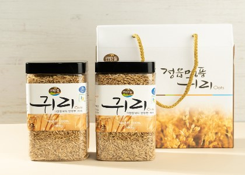

농진청은 특히 국산 귀리 품종인 ‘대양’에서 Avn-C가 다른 품종이나 외국산 귀리 가공제품보다 많은 양이 들어 있다고 설명했다.
이런 귀리를 전국에서 처음 재배하고 상품화에 성공한 곳이 전북 정읍이다.
다른 곡류보다 단백질 함량이 좋고 쌀보다 2배 이상 높다.
쌀보다 당질은 적지만, 지방질은 현미의 두 배이며 섬유소도 현미보다 많아 에너지가 많은 곡류이다.
식이섬유를 다량함유하고 있어 변비치료와 담즙산 제거에 의한 콜레스테롤 저하작용에 효과가 있다.
인체 내장의 유해한 콜레스테롤을 제거해주며 혈압 강하 효과가 탁월하다고 알려져 있어 비만자에게 최고의 식품으로 통한다.